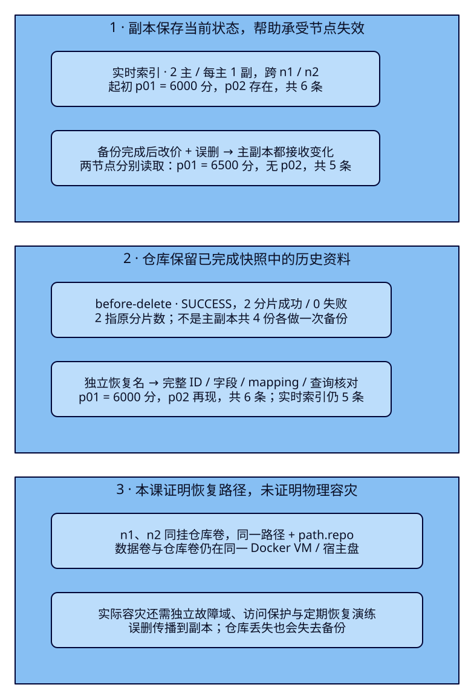
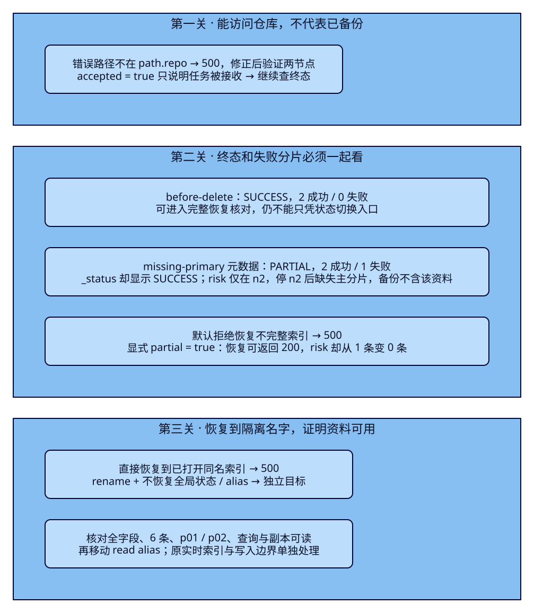

副本都有了，
为什么还要练习备份恢复？
旅游搜索已能承受一台数据节点离线，也能切换新旧索引。运营却误删了景点：主副本一起变成“没有这份资料”，保留的旧索引也未必能幸免。本课把六份景点资料备份到仓库，再制造改价、删除和缺失主分片，恢复到隔离名字，证明哪些资料真的回来。游客仍通过同一个Java搜索入口观察前后变化。
学完能用输出证明什么
- 用两节点读取说明副本为何会同步误删；配置并验证共享仓库，区分“请求被接收”“快照完成”“内容完整”。
- 制造PARTIAL快照，核对失败分片与默认拒绝；解释显式partial恢复虽返回200，为什么仍可能丢失资料。
- 将成功快照恢复到新名字，核对全ID/字段、mapping、计数、代表查询与实际Java结果，并说明历史备份与最新业务状态的差别。
本课目录
图解跳转：01 · 副本与历史备份 · 02 · 恢复的三道检查
1. 还有一份副本，为什么找不回误删的p02？
副本是同一索引分片当前状态的另一份可用拷贝。F30中，主分片所在节点离线时，合格副本可以提升以继续服务。但正常接收的删除同样会复制：不是一份保留“删除前”，另一份保留“删除后”。本课把p01从6000分改成6500分并删除p02，两节点分别读取，都得到五份资料、p01新价、没有p02。这正是复制正常工作的结果。
备份需要在实时索引之外保留可恢复的历史内容。Snapshot是ES提供的备份机制，存储位置叫repository（仓库）；restore把选定内容恢复成索引。快照从主分片复制所需的不可变段文件，已有文件可以复用，所以不能按“四个主副拷贝”理解本课的分片计数，也不能随意删仓库文件。本课主索引2主/每主1副，完整快照仍记录2个分片成功。
快照覆盖一个开始到结束的区间，各分片取其中某一时点的视图，不是整个集群在同一瞬间拍照。为固定本课的六份预期，先暂停全部写入者、给源加write block，再refresh和备份；这不是声称所有线上快照都必须停写。refresh用于下面的搜索核对，不能拿它替代持久备份。ES仍是搜索投影，恢复备份不把它变成业务事实数据库。

2. 两节点、一份共享仓库、明确的隔离名字
ES9.4.0/Lucene10.4.0，独立集群es-framework-f34 / travel-f34-lab。n1为master/data/ingest、HTTP 127.0.0.1:19834；n2为data、19835。唯一master候选n1不停止；本课只暂时停止n2。每节点192MiB堆、640MiB容器限额，HTTP仅回环、无认证。三个卷分别保存n1数据、n2数据和快照；它们仍在同一Docker VM与宿主盘，不能证明宿主盘损坏时可恢复。
fs仓库要求所有master和data节点挂载同一内容、使用相同路径，并配置path.repo。白名单决定允许的位置，文件权限决定ES能否操作；两者都要满足。配置中的repo-init仅为本课仓库卷根目录设置UID1000/GID0与0770，不递归改仓库文件。稳定配置与首次引导见Compose、bootstrap。start仅在两个数据卷都不存在时首启引导，成团后移除名单；已有完整卷直接重启，部分数据卷缺失则拒绝重新引导。
cd projects/travel-search
python3 labs/f34/lab.py start --out /tmp/f34-reader-setup另一终端先把JAVA_HOME/PATH指向完整JDK25，构建既有Boot4.0.8/官方Java与Rest5 Client9.4.8工程。应用JDK与ES内置JVM分别记录。管理请求留在本课REST，不新增Controller或前端：
cd projects/travel-search/backend
./mvnw -B -ntp clean package dependency:build-classpath -Dmdep.outputFile=target/f34-classpath.txt
ES_URL=http://127.0.0.1:19834 ES_INDEX=tut-f34-attractions-read APP_PORT=18082 \
java -jar target/travel-search-0.7.0.jar回到项目目录执行三案例；每个输出目录必须是新目录，run先点名清理本课资源。完整自动执行与下面的手工路径二选一，不在自动运行中途写入：
export APP_URL=http://127.0.0.1:18082
python3 labs/f34/lab.py run --out /tmp/f34-reader-round1实验入口与完整手工请求顺序包含四个观察点、预期错误、等待与恢复。手工执行前先cleanup，逐节检查响应；不符预期先恢复n2，再停止后续操作。read alias建立前不提交搜索。
主索引tut-f34-attractions-v001：2主/每主1副、refresh=-1、dynamic=strict、name=text/whitespace并有raw=keyword。固定资料p01/p02满足西湖、HZ、在售、CNY、3km和20000分预算；p03超预算、p04城市不符、p05下架、p06名称不符。名称空格只用于隔离中文插件差异，金额始终是CNY整数分。另有risk单分片样本，专用于缺失主分片反例，不代表正确的生产副本配置。
完整主索引配置与固定六份Bulk资料
{
"settings": {
"number_of_shards": 2,
"number_of_replicas": 1,
"refresh_interval": "-1"
},
"mappings": {
"dynamic": "strict",
"properties": {
"attraction_id": {
"type": "keyword"
},
"name": {
"type": "text",
"analyzer": "whitespace",
"fields": {
"raw": {
"type": "keyword"
}
}
},
"city_code": {
"type": "keyword"
},
"ticket_price_fen": {
"type": "integer",
"coerce": false
},
"currency": {
"type": "keyword"
},
"status": {
"type": "keyword"
},
"location": {
"type": "geo_point"
}
}
}
}{"create":{"_id":"p01"}}
{"attraction_id":"p01","name":"西湖 湖畔","city_code":"HZ","ticket_price_fen":6000,"currency":"CNY","status":"open","location":{"lat":30.25,"lon":120.15}}
{"create":{"_id":"p02"}}
{"attraction_id":"p02","name":"西湖 公园","city_code":"HZ","ticket_price_fen":0,"currency":"CNY","status":"open","location":{"lat":30.251,"lon":120.15}}
{"create":{"_id":"p03"}}
{"attraction_id":"p03","name":"西湖 山居","city_code":"HZ","ticket_price_fen":30000,"currency":"CNY","status":"open","location":{"lat":30.252,"lon":120.15}}
{"create":{"_id":"p04"}}
{"attraction_id":"p04","name":"西湖 古街","city_code":"FZ","ticket_price_fen":1000,"currency":"CNY","status":"open","location":{"lat":30.251,"lon":120.15}}
{"create":{"_id":"p05"}}
{"attraction_id":"p05","name":"西湖 故居","city_code":"HZ","ticket_price_fen":5000,"currency":"CNY","status":"closed","location":{"lat":30.253,"lon":120.15}}
{"create":{"_id":"p06"}}
{"attraction_id":"p06","name":"运河 西溪","city_code":"HZ","ticket_price_fen":1000,"currency":"CNY","status":"open","location":{"lat":30.25,"lon":120.15}}3. f34-c01：仓库可写，再核对快照终态
先故意把location指到/mnt/outside-f34，它不在path.repo白名单。9.4.0实测500/repository_exception，reason指出不匹配path.repo；拒绝后仓库没有注册。修正为相对位置travel-f34，会解析到首个path.repo下的/mnt/f34-repository/travel-f34：
{
"type": "fs",
"settings": {
"location": "/mnt/outside-f34"
}
}{
"type": "fs",
"settings": {
"location": "travel-f34",
"compress": true
}
}export F34_ES=http://127.0.0.1:19834
curl -sS -X PUT "$F34_ES/_snapshot/tut-f34-outside" -H 'Content-Type: application/json' --data-binary @search/f34/repository-bad.json
curl -sS -X PUT "$F34_ES/_snapshot/tut-f34-fs" -H 'Content-Type: application/json' --data-binary @search/f34/repository.json
curl -sS -X POST "$F34_ES/_snapshot/tut-f34-fs/_verify"_verify返回两节点ID与名字，说明两节点此时能访问这份仓库，不说明已有备份，更不说明内容已验证。初次预演还出现过卷权限导致的500/repository_verification_exception：本课已把卷根目录初始化纳入start，不能用扩大path.repo绕过文件权限。失败收据与修复分列保留。
按手工顺序创建主索引、Bulk、挂read alias，专用write block成功后refresh；读取六份完整_source与Java的p01/p02。随后创建快照：
{
"indices": "tut-f34-attractions-v001",
"ignore_unavailable": false,
"include_global_state": false,
"feature_states": [
"none"
],
"partial": false,
"metadata": {
"lesson": "F34",
"purpose": "fixed-six-documents-before-logical-delete"
}
}curl -sS -X PUT "$F34_ES/_snapshot/tut-f34-fs/before-delete?wait_for_completion=false" -H 'Content-Type: application/json' --data-binary @search/f34/snapshot-good.json
curl -sS "$F34_ES/_snapshot/tut-f34-fs/before-delete"
curl -sS "$F34_ES/_snapshot/tut-f34-fs/before-delete/_status"第一条返回accepted=true，表示请求被接收。继续查询元数据，直到终态；小语料可能很快完成，不要求观察到IN_PROGRESS。正式脚本轮询；手工文件使用wait_for_completion=true等待同一结果。必须核对元数据state=SUCCESS、shards.total=2/successful=2/failed=0、failures=[]、indices只含主索引。include_global_state=false与feature_states=[none]明确排除全局状态/功能状态，本课不是完整集群灾备。
快照中的普通索引包含mapping、索引设置与alias元数据；节点配置、仓库注册本身不会随备份自动回来。恢复时还要单独控制是否恢复alias与全局状态。一个仓库只安排一个集群写入；其他集群访问时使用只读注册。快照之间可能共享段文件，删除要用Snapshot API，不能在卷内按文件名清理。
4. f34-c02：副本完整地接收了错误操作
等完整快照完成后，解除源write block；p01改6500分，删除p02，再refresh。本课两次写入都wait_for_active_shards=all，响应_shards.successful=2。再限定节点分别搜索，避免只凭一次协调请求推测副本内容：
curl -sS -X PUT "$F34_ES/tut-f34-attractions-v001/_settings" -H 'Content-Type: application/json' --data-binary '{"index.blocks.write":false}'
curl -sS -X PUT "$F34_ES/tut-f34-attractions-v001/_doc/p01?wait_for_active_shards=all" -H 'Content-Type: application/json' --data-binary @data/f34/p01-updated.json
curl -sS -X DELETE "$F34_ES/tut-f34-attractions-v001/_doc/p02?wait_for_active_shards=all"
curl -sS -X POST "$F34_ES/tut-f34-attractions-v001/_refresh"
curl -sS -X POST "$F34_ES/tut-f34-attractions-v001/_search?allow_partial_search_results=false&preference=_only_nodes:travel-f34-n1" -H 'Content-Type: application/json' --data-binary @search/f34/fields.json
curl -sS -X POST "$F34_ES/tut-f34-attractions-v001/_search?allow_partial_search_results=false&preference=_only_nodes:travel-f34-n2" -H 'Content-Type: application/json' --data-binary @search/f34/fields.json每个节点都返回p01/p03/p04/p05/p06，p01=6500；直接GET p02为404。游客输入西湖，只剩p01，Java卡片为¥65.00。把查询切到副本找旧文档没有依据；备份before-delete仍描述误删前的六份资料。只看集群green也不能发现这种业务错误。
5. 不完整快照完成了，缺失资料也不会自动补回
另建tut-f34-risk：1主/0副，allocation.include._name固定travel-f34-n2，写risk-01并核对count=1与实际分片在n2。此处故意没有副本，使故障稳定可重现；不去破坏主索引的两份拷贝。
risk完整配置与唯一资料
{
"settings": {
"number_of_shards": 1,
"number_of_replicas": 0,
"refresh_interval": "-1",
"index.routing.allocation.include._name": "travel-f34-n2"
},
"mappings": {
"dynamic": "strict",
"properties": {
"marker_id": {
"type": "keyword"
},
"name": {
"type": "keyword"
}
}
}
}{
"marker_id": "risk-01",
"name": "only-on-n2"
}停止n2后，等主索引在单节点为yellow、risk主分片为UNASSIGNED。全局此时为red，因为risk不可用；不能一直等全局green。只停止data节点，master n1仍在：
docker compose -f infra/f34/compose.yaml stop n2
curl -sS "$F34_ES/_cluster/health/tut-f34-attractions-v001?wait_for_nodes=1&wait_for_status=yellow&wait_for_no_initializing_shards=true&timeout=120s"
curl -sS "$F34_ES/_cat/shards/tut-f34-risk?format=json&h=index,shard,prirep,state,node"对“主索引+风险索引”设置partial=true，只备份当时可用分片。partial不是修复操作；它允许留下明确的缺口。ignore_unavailable=false仍防止把拼错索引名当作正常输入：
{
"indices": "tut-f34-attractions-v001,tut-f34-risk",
"ignore_unavailable": false,
"include_global_state": false,
"feature_states": [
"none"
],
"partial": true
}curl -sS -X PUT "$F34_ES/_snapshot/tut-f34-fs/missing-primary?wait_for_completion=true" -H 'Content-Type: application/json' --data-binary @search/f34/snapshot-partial.json
curl -sS "$F34_ES/_snapshot/tut-f34-fs/missing-primary"
curl -sS "$F34_ES/_snapshot/tut-f34-fs/missing-primary/_status"
docker compose -f infra/f34/compose.yaml up -d n2
curl -sS "$F34_ES/_cluster/health?wait_for_nodes=2&wait_for_status=green&wait_for_no_relocating_shards=true&wait_for_no_initializing_shards=true&timeout=120s"实测元数据state=PARTIAL，total=3/successful=2/failed=1，failures点名risk分片0、primary shard is not allocated。9.4.0的_status却返回state=SUCCESS，同时shards_stats.failed=1。该接口把已完成的SUCCESS/PARTIAL都映射成完成态；不能用_status的一个字符串证明完整。要结合元数据、失败分片和恢复核对。n2原卷回归后risk又是1条，但已经完成的missing-primary快照仍缺它，不能把节点恢复误认作备份被补齐。

先按默认partial=false恢复这两个索引，并改名到tut-f34-partial-*避免同名干扰：实测500/snapshot_restore_exception，risk wasn't fully snapshotted - cannot restore。显式允许partial并忽略risk的原节点限制后，再恢复到相同隔离前缀：
{
"indices": "tut-f34-attractions-v001,tut-f34-risk",
"include_global_state": false,
"include_aliases": false,
"feature_states": [
"none"
],
"rename_pattern": "^tut-f34-(.+)$",
"rename_replacement": "tut-f34-partial-$1",
"partial": true,
"index_settings": {
"index.number_of_replicas": 0
},
"ignore_index_settings": [
"index.routing.allocation.include._name"
]
}这次HTTP200，但恢复响应仍是total=3/successful=2/failed=1。等待目标可读后，partial-risk count=0，_recovery显示EMPTY_STORE/DONE；原risk仍count=1。缺失分片被重建为空，并没有从刚回来的n2补历史备份。部分恢复有救回可用资料的用途，本课绝不把它标作“完整恢复成功”。
6. f34-c03：先换名字恢复，再证明资料回来
回到before-delete完整快照。直接恢复原名，而实时主索引仍打开，实测500/snapshot_restore_exception，提示同名open index已存在。本课保留实时资料用于对照，使用rename恢复到tut-f34-restore-attractions-v001：
{
"indices": "tut-f34-attractions-v001",
"include_global_state": false,
"include_aliases": false,
"feature_states": [
"none"
]
}{
"indices": "tut-f34-attractions-v001",
"include_global_state": false,
"include_aliases": false,
"feature_states": [
"none"
],
"rename_pattern": "^tut-f34-(.+)$",
"rename_replacement": "tut-f34-restore-$1",
"index_settings": {
"index.number_of_replicas": 1
}
}curl -sS -X POST "$F34_ES/_snapshot/tut-f34-fs/before-delete/_restore?wait_for_completion=true" -H 'Content-Type: application/json' --data-binary @search/f34/restore-conflict.json
curl -sS -X POST "$F34_ES/_snapshot/tut-f34-fs/before-delete/_restore?wait_for_completion=true" -H 'Content-Type: application/json' --data-binary @search/f34/restore-good.json
curl -sS "$F34_ES/_cluster/health/tut-f34-restore-attractions-v001?wait_for_status=green&wait_for_no_relocating_shards=true&wait_for_no_initializing_shards=true&timeout=120s"rename_pattern匹配完整本课前缀，$1保留attractions-v001后缀。include_aliases=false避免备份中的read alias自动挂到恢复目标，include_global_state=false与feature_states=[none]限定范围。显式每主1副；原索引mapping、2主、refresh=-1及备份时的write block恢复回来，历史目标保持只读。rename只改名字，不改变字段类型，不是reindex。
wait_for_completion=true的恢复响应2成功/0失败说明主分片恢复阶段完成，仍另等副本green、无初始化和迁移，再refresh并检查：
| 检查 | 恢复目标 | 实时源对照 |
|---|---|---|
| 完整ID与_source | p01至p06逐字段一致，共6条 | p01/p03/p04/p05/p06，共5条 |
| 价格与删除 | p01=6000；p02存在且0分 | p01=6500；p02 GET为404 |
| mapping/设置 | strict；name=text/whitespace；2主1副；write block=true | 字段规则相同；当前可写 |
| 代表查询 | 西湖/HZ/在售/预算/距离：p01、p02 | 同条件：只有p01 |
| 恢复类型与入口 | 主分片SNAPSHOT/DONE；没有alias | read alias仍指实时源 |
恢复后的总条数不够；五份错资料加一份多余文档也能凑成六条。脚本比较所有ID和完整_source，并分别从两节点读取恢复目标，核对mapping、设置、恢复类型、p02与代表查询。完整核对请求见手工文件；相同查询DSL为：
完整REST查询：与Java生成请求逐项核对
{
"size": 20,
"track_total_hits": true,
"track_scores": true,
"_source": {
"includes": [
"attraction_id",
"name",
"city_code",
"ticket_price_fen",
"currency",
"status",
"location"
]
},
"query": {
"bool": {
"must": [
{
"match": {
"name": {
"query": "西湖",
"operator": "or"
}
}
}
],
"filter": [
{
"term": {
"city_code": {
"value": "HZ"
}
}
},
{
"term": {
"currency": {
"value": "CNY"
}
}
},
{
"range": {
"ticket_price_fen": {
"gte": 0.0,
"lte": 20000.0
}
}
},
{
"term": {
"status": {
"value": "open"
}
}
},
{
"geo_distance": {
"distance": "3.0km",
"distance_type": "arc",
"location": {
"lat": 30.25,
"lon": 120.15
}
}
}
]
}
},
"sort": [
{
"attraction_id": {
"order": "asc"
}
}
]
}到这里Java仍返回实时源p01=6500；隔离恢复没有移动入口。确认字段与查询后，才用一个请求把read alias移到已验收的历史目标：
{
"actions": [
{
"remove": {
"index": "tut-f34-attractions-v001",
"alias": "tut-f34-attractions-read",
"must_exist": true
}
},
{
"add": {
"index": "tut-f34-restore-attractions-v001",
"alias": "tut-f34-attractions-read",
"is_write_index": false
}
}
]
}再GET alias确认只挂恢复目标，原实时源仍保留五份资料。这里只切读取入口演示历史内容，不建立写入目标、不解除历史目标write block；完整线上恢复还需决定写入者、合法变更和后续追平，不能照搬为任意时刻的回滚流程。
7. 同一个Java进程，四个观察点
浏览器打开本机18082展示壳，输入西湖/HZ/20000分/30.25,120.15/3km。它向Java提交相同搜索契约，Java使用ES_INDEX配置中的read alias。快照由隔离运维请求管理，游客接口不获得快照权限；Pages只承载教程。下列既有实现完整保留查询与不完整结果的拒绝逻辑：
关键Java查询、执行与结果分支（复用F07，无新增接口）
public SearchRequest request(SearchInput input) {
return SearchRequest.of(search -> search.index(index)
.size(20).trackTotalHits(t -> t.enabled(true)).trackScores(true)
.source(s -> s.filter(f -> f.includes(List.of("attraction_id", "name", "city_code",
"ticket_price_fen", "currency", "status", "location"))))
.query(q -> q.bool(b -> b
.must(m -> m.match(t -> t.field("name").query(input.q()).operator(Operator.Or)))
.filter(f -> f.term(t -> t.field("city_code").value(input.cityCode())))
.filter(f -> f.term(t -> t.field("currency").value("CNY")))
.filter(f -> f.range(r -> r.number(n -> n.field("ticket_price_fen")
.gte(0.0).lte(input.maxPriceFen().doubleValue()))))
.filter(f -> f.term(t -> t.field("status").value("open")))
.filter(f -> f.geoDistance(g -> g.field("location")
.distance(input.radiusKm() + "km").distanceType(GeoDistanceType.Arc)
.location(l -> l.latlon(p -> p.lat(input.latitude()).lon(input.longitude())))))))
.sort(s -> s.field(f -> f.field("attraction_id").order(SortOrder.Asc))));
}
public SearchResult search(SearchInput input) throws IOException {
var request = request(input);
var response = client.search(request, Attraction.class);
if (response.timedOut() || response.shards().failed().longValue() != 0
|| response.hits().total() == null) {
throw new IncompleteSearchException();
}
var items = response.hits().hits().stream().map(hit -> {
var source = hit.source();
if (source == null || !hit.id().equals(source.attractionId())
|| source.name() == null || source.ticketPriceFen() == null) {
throw new IncompleteSearchException();
}
return new SearchResult.Card(hit.id(), source.name(), source.cityCode(),
source.ticketPriceFen(), source.currency(), source.status(), hit.score());
}).toList();
String dsl = JsonpUtils.toJsonString(request, client._jsonpMapper());
return new SearchResult(response.hits().total().value(), response.hits().total().relation().jsonValue(),
response.took(), input, json.readTree(dsl), items);
}| 观察点 | Java命中与卡片 | 对应入口与原因 |
|---|---|---|
| 01 备份前 | p01=¥60.00、p02=¥0.00 | 实时源六份；先形成核对基线 |
| 02 改价误删后 | p01=¥65.00 | 主副本均新价且没有p02 |
| 03 隔离恢复后 | 仍p01=¥65.00 | 目标六份已恢复，但alias尚未移动 |
| 04 核对并切read后 | p01=¥60.00、p02=¥0.00 | 同Java进程读取历史目标，原实时源仍五份 |
每个观察点的Java生成DSL独立用REST重放，核对ID、金额和字段；作者浏览器实际请求经Java到ES，浏览器直连ES为0。资料与截图见真实运行记录。本课没有改共享Java/前端，既有错误分支未重新做故障注入，不把源码存在称为本轮已测。
恢复历史备份，不等于恢复最新业务。p01的合法改价也被回到6000分，备份后的合法新增/修改/删除可能需要从来源重建或重放。本课仅证明选定快照的资料完整可恢复；尚未证明恢复到事故前最后一笔业务。实际恢复点取决于最近可用备份与后续变更，恢复耗时也要在真实规模演练，不能从六份样本外推。
8. 清理、重做与实际范围
python3 labs/f34/lab.py run --out /tmp/f34-reader-round2
python3 labs/f34/lab.py cleanup --out /tmp/f34-reader-cleanup
python3 labs/f34/lab.py down --out /tmp/f34-reader-down每轮run先清理。cleanup先恢复n2并等green，再显式删除五个本课索引：attractions-v001、risk、restore-attractions-v001、partial-attractions-v001、partial-risk（均tut-f34-前缀）；删除before-delete、missing-primary两快照，再注销tut-f34-fs与失败仓库名tut-f34-outside。附着alias/索引write block随索引删除。删除快照会销毁本轮历史备份，只在重做或结束时执行；注销仓库本身不等于删除备份文件。
down只移除本课容器/网络，保留三个卷；Java原终端Ctrl+C停止。不手动清理仓库目录，不用通配符删除其他资源，不修改集群persistent/transient设置。中断后保留收据，先启动原卷n2，再用新目录run；部分数据卷缺失不重新bootstrap。guard发现外来索引、仓库、未知快照或仍在运行的快照时拒绝清理。
两轮各65教学REST和4 Java搜索HTTP；教学数含全字段/配置/DSL重放，guard、身份、等待、清理、浏览器附加另计。构建、ES、观察窗、图生成、HTTP阅读、实际视觉分别记录，见内容与阅读验收。预演的权限、408等待、两类响应计数修正保留为失败尝试，不冒充正式通过轮次。
只验证同VM两节点、小固定样本、同版本、手动快照与串行变化；未测独立机器/异地介质、宿主盘损坏、仓库损坏/只读访问故障、跨版本兼容、SLM自动保留、系统/功能状态、安全、持续业务追平、性能与恢复时限。作者自审不称独立审阅；当前入口无法设置或自行读回最新gpt-6.1-sol/max，限制单列，此前xhigh偏好保留。
官方依据与固定v9.4.0源码入口
Snapshot and restore解释段复用、分片时间视图、备份范围与版本兼容；共享文件系统仓库说明挂载、path.repo、权限与单写入集群；创建API与恢复API给出参数含义。固定tag的FsRepository构造器检查白名单；SnapshotsService缺失主分片分支控制partial；RestoreService.checkPartial / validateExistingClosedIndex检查不完整与同名目标；TransportSnapshotsStatusAction的状态映射解释_status为何可能SUCCESS却有失败分片。四份源码字节核对与真实API分列。
9. 能恢复了，谁应该有删除备份的权限？
本课为了观察机制使用回环无认证环境，任何能访问它的本机进程都可能管理索引与快照。恢复路径成立以后，仍要防止游客搜索服务误拿管理权限、写入任务能删除备份、证书不可信却继续连接。F35再讲TLS、认证、最小权限与Java安全连接；本课不提前实施。
能力检查：先判断，再展开
1. n1/n2都正常，p02却找不到。先提升副本能找回吗？
本课删除已成功复制到两份拷贝，分别读取均无p02。提升副本不会恢复历史资料；先定位误删与可用备份，再隔离恢复核对。
2. accepted=true和元数据SUCCESS分别证明了什么？
前者仅接收任务；后者说明快照终态成功，仍要核对索引范围、失败数和实际恢复。它们都不能单独证明应用已恢复。
3. _status.state=SUCCESS且failed=1，可以宣布备份完整吗？
不可以。9.4.0把已完成PARTIAL也映射为该完成态。missing-primary元数据是PARTIAL，risk分片失败；必须核对元数据与失败分片。
4. n2回来后risk又1条，为什么部分恢复却0条？
原卷回归恢复的是实时risk；完成的快照没有自动补齐缺失内容。显式partial恢复把缺失分片重建为空，_recovery为EMPTY_STORE，HTTP200也仍有failed=1。
5. rename成功、计数6，为什么还要查字段、alias和查询？
计数不能证明身份和价格正确；rename不转换字段。还要逐ID/_source、mapping/设置、代表查询和入口核对，避免错资料、旧价格或意外合并读取两个索引。
6. 备份里有read alias，为什么restore后Java仍只有p01？
include_aliases=false使恢复目标没有alias。Java配置的read入口仍指实时源，直到核对后显式移动。隔离恢复与上线入口是两件要分别验证的操作。
7. 新需求：必须保留合法改价6500，同时找回误删p02，能直接切本课恢复目标吗？
不能称为最新业务已恢复：目标p01仍6000。先依据业务来源区分合法变更与误操作，再设计补齐与对账；本课只完成历史备份可恢复性，未实现持续变更追平。
8. 独立仓库卷是否已经证明宿主盘损坏可恢复？
没有。三个卷仍共用Docker VM与宿主盘。要覆盖该故障，备份需在独立故障域可访问，保留所需配置/权限并实际进行相应恢复演练。
实际陷阱
速记
| 问题 | 本课证据 | 成立边界 |
|---|---|---|
| 副本 | 两节点均五份，p02不存在 | 复制当前变化，不能替代历史备份 |
| 仓库 | 越界路径500；修正后verify两节点 | 同内容/路径、path.repo、文件权限 |
| 完整快照 | 元数据SUCCESS，2成功/0失败 | 六份固定资料；未含全局/功能状态 |
| 不完整快照 | 元数据PARTIAL，_status却SUCCESS/failed=1 | 看失败分片；完成态不代表完整 |
| 部分恢复 | 默认500；显式200但failed=1、risk变0条 | EMPTY_STORE为空重建，不能标完整 |
| 完整恢复 | 改名、全字段六份、p01/p02、Java前后对照 | 先隔离核对；历史内容不等于最新业务 |
副本守住当前可用性，备份保留历史；真正的恢复证据，是隔离目标里的资料和查询都经得起核对。